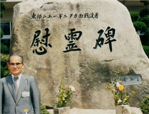

|
第１ 松本無線通信隊誕生
 松本無線通信隊が結成された頃、ラバウルには第八方面軍司令部（軍司令官は今村均大将）と第十八軍（猛軍）司令部（軍司令官は安達二十三中将）が布陣していた。翌年の昭和１８年１月には、ポートモレスビー攻略に参加した第四十六固定無線隊が松本通信部隊に編入された。この頃は地上からポートモレスビーを攻略に向かった南海支隊は、ポートモレスビーの灯を眼下に見ながら後方からの補給が続かず、大本営命令で、再びオーエンスタンリー山脈（標高四千メートル）を越えて撤退し、南太平洋側のブナ、ギルワに集結していた。そして敵のマックアーサー大将が指揮するアメリカ陸軍に包囲され苦戦するという状況に変わっていった。昭和１７年１２月にラバウルに上陸し、ラバウル西方のブカの陣営で一段落し何日か経ったある日、ご老体の松本少佐殿（５３歳）が「小隊長は全員集まれ」という。突然に小隊長だけ全員集合とは何事かといぶかった？ラバウルに上陸してまだ日は浅い。そんな訳で「現在苦戦中であるラエ、ブナ、ギルワ方面に全小隊進行するのではないか！」と思った。 松本少佐は独特のしわがれた声で 『諸君の中で一号無線機を操作できる者はおらんか？』 という。とつさに私は 「はいっ！出来ます」 と手を上げた。外の者は黙っている。手を上げたのは私ひとりだった。おや？と内心思った。瞬間、私はやはりいま敗走中のブナ、ギルワ方面に進攻命令を受けるのでないかという危惧がチラッと頭をよこぎった。ブナ、ギルワ方面は最も激しい激戦中の戦場で、その後方基地はラエであり軍の主要陣地であった。ブナ、ギルワ方面は激戦中の戦場だったので外の同僚逹は手を上げなかったのであろうと思った。 ところがこの問い掛けの結果はその反対で、予想に反し最も安全な後方基地の「マダン」に一号無線機を装備した無線一ケ分隊を指揮して、敵前上陸作戦に参加することになった。 松本通信隊が編成される頃（前年昭和１６年に大東亜戦争が勃発）の関東軍、電信第三聯隊（兵力約千名）は、野戦で遠距離無線通信が出来る二号無線機で訓練しており、出力の大きくて重い一号無線機は装備していなかった。通常、平時には一号無線機、五号無線機等の取り扱いは訓練されていない。従って一号無線機の操作経験は全く無かったが、それでも一号無線機といっても要は応用動作であって、なんとか操作できるものだと考えた。しかしその時は勇気と決断力のいる決心だった。私の決断力の影には、山口無線小隊には優秀な現役兵がたくさん居たからである。無線第三分隊長西村昇伍長とか丸山英二上等兵（機関兵）等が居た。この優秀な現役兵が一号無線機の操作をこなせたお陰である。 この一言「はい！出来ます」と言った為に、当時予想もしてない遥か後方のマダンに敵前上陸した事、そしてその後ハンサ作戦とマダン作戦を軍作戦参謀の田中少佐殿と共にしたので、軍司令部に顔が出来た事、この二つが大きな原因で、九死に一生を得て運よく日本に生還できたと言っても過言ではないと思っている。 |